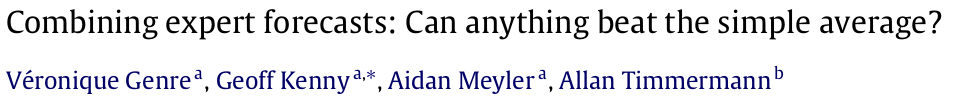
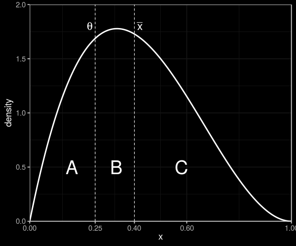
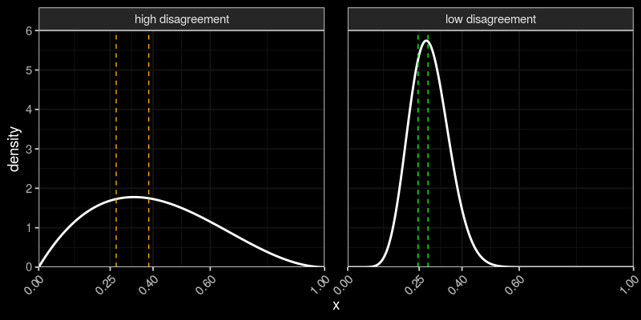

Cem Peker
Tinbergen Institute, Erasmus University Rotterdam
The need for probabilistic predictions
Finance
Insurance, Betting
Project success
How do we obtain accurate probabilistic predictions?
Expert judgments (ex: ECB's Survey of Professional Forecasters)
How should we combine judgments from multiple experts?
How should we combine judgments from multiple experts?
Simple averaging is hard to beat (Clemen, 1989; Soll, 2009)
Problem: Shared information
Example: Subprime mortgage crisis (2008-2010)
Analysts collectively underestimated risks
Miscalibrated average belief
A robust aggregation method?
This paper develops the Surprising Overshoot (SO) algorithm.
Elicits and uses meta-beliefs
Prelec et al. (2017), Palley and Soll (2019), Palley and Satopaa (2020), Wilkening et al. (2021)
Meta-belief example:
What is the probability that project X succeeds?
(prediction)
What is the average probability estimated by the other experts?
(meta-prediction)
Relationship between predictions and meta-predictions
Evidence from three experimental studies
The SO algorithm...
...consistently outperforms average prediction.
...improves over existing aggregation algorithms.
Palley and Soll (2019), Palley and Satopaa (2020), Martinie et al. (2020)
The Surprising Overshoot estimator
"Linear aggregation problem" (Palley and Soll, 2019; Palley and Satopaa, 2020)
$\theta$: true probability
prediction: $x_i = (1-\omega) \,\, \color{orange}{s} \, + \, \omega \,\, \color{orange}{t_i}$
meta-prediction: $z_i = (1-\omega) \,\, \color{orange}{s} \, + \, \omega \,\, \color{orange}{E\left[ \frac{1}{N-1} \sum\limits_{j \neq i} t_j \, \middle\vert \, s,t_i \right]}$
"Linear aggregation problem" example (Palley and Soll, 2019)
$Y \in \{0,1\}$: outcome of the event, $\theta = P(Y=1)$
Common prior on $\theta$: $Beta(m_0 \mu_0, m_0(1-\mu_0))$
$s_1$: average of $m_1$ independent realizations of $Y$
$t_i$: average of $\ell$ independent realizations of $Y$
$s$: combination of $s_1$ and $\mu_0$ with $m = m_1 + m_2$
Posterior belief: $Beta(ms + \ell t_i, m(1-s) + \ell(1-t_i))$ with $$E[\theta | s,t_i] = \frac{m}{m+\ell} s + \frac{\ell}{m+\ell} t_i$$
Simple averaging?
$ \displaystyle \bar{x} = (1-\omega) \,\, \color{orange}{s} \, + \, \omega \,\, \color{orange}{\frac{1}{N} \sum_{i=1}^N t_i} $
Then, \begin{align} \lim_{N \to \infty} \bar{x} &= (1-\omega) \,\, \color{orange}{s} + \omega \,\, \color{orange}{\theta} \neq \theta \quad \text{ for } \quad s \neq \theta \end{align}
Shared-information problem (Palley and Soll, 2019; Palley and Satopaa, 2020)
$z_i > \bar{x} \iff x_i > \theta$
proportion of meta-predictions $(z_i)$ that overshoot $\bar{x}$
also measures
proportion of predictions $(x_i)$ that overshoot $\mathbf{\theta}$
$\underline{z_i > \bar{x} \iff x_i > \theta} $
Suppose expert $i$'s meta-prediciton overshoots average prediction
$\displaystyle z_i > \bar{x} $
$\displaystyle \color{orange}{(1-\omega) s} + \omega \frac{1}{N-1} \sum\limits_{j \neq i} E[t_j | s,t_i] > \color{orange}{(1-\omega) s} + \omega \frac{1}{N} \sum_{i=1}^N t_i$
$\displaystyle E\left[ \theta | s,t_i \right] > \frac{1}{N} \sum_{i=1}^N t_i$
$\displaystyle x_i > \frac{1}{N} \sum_{i=1}^N t_i$ $ = \theta \quad \text{ for } N \to \infty$
An example density of predictions
predictions that overshoot $\theta = B + C$
predictions "above average" $= C$
"overshoot surprise"
$1 - (B+C)$ quantile gives $\theta$
population density is unknown
Surprising Overshoot (SO) algorithm:
Theorem: SO estimator is consistent
Proof (sketch):
Asymptotic unbiasedness + Zero asymptotic variance $\to$ $x_N^{SO}$ is consistent
Testing the SO algorithm
Methodology:
Study 1: "Coin Flips" (Palley and Soll, 2019)
Task: Predict P(Heads) of a biased coin
Study 1: "Coin Flips"
(Palley and Soll, 2019)
Task: Predict P(Heads) of a biased coin
48 coins, 685 subjects
Relative accuracy increases with sample size
Differences with Simple Average, Median and Meta-Probability Weighting are significant
Study 2: "General Knowledge"
Martinie et al. (2020), Wilkening et al. (2021)
"Herbivores eat both plants and animals" (True or False?)
Study 3: "State Capital"
Prelec et al. (2017), Wilkening et al. (2021)
"Los Angeles is the capital city of California" (True or False?)
500 items, 459 subjects
50 items, 89 subjects
...
...
Items categorized according to disagreement in predictions.
...
Items categorized according to disagreement in predictions.
Significant differences in high-disagreement items.
Items categorized according to disagreement in predictions.
Significant differences in high-disagreement items.
Dashed lines: 30% and 50% quantiles.
More disagreement $\to$ Greater improvement in accuracy
Summary
SO algorithm improves over benchmarks.
Higher relative performance in moderate to large samples.
More effective when experts disagree greatly.
Questions?